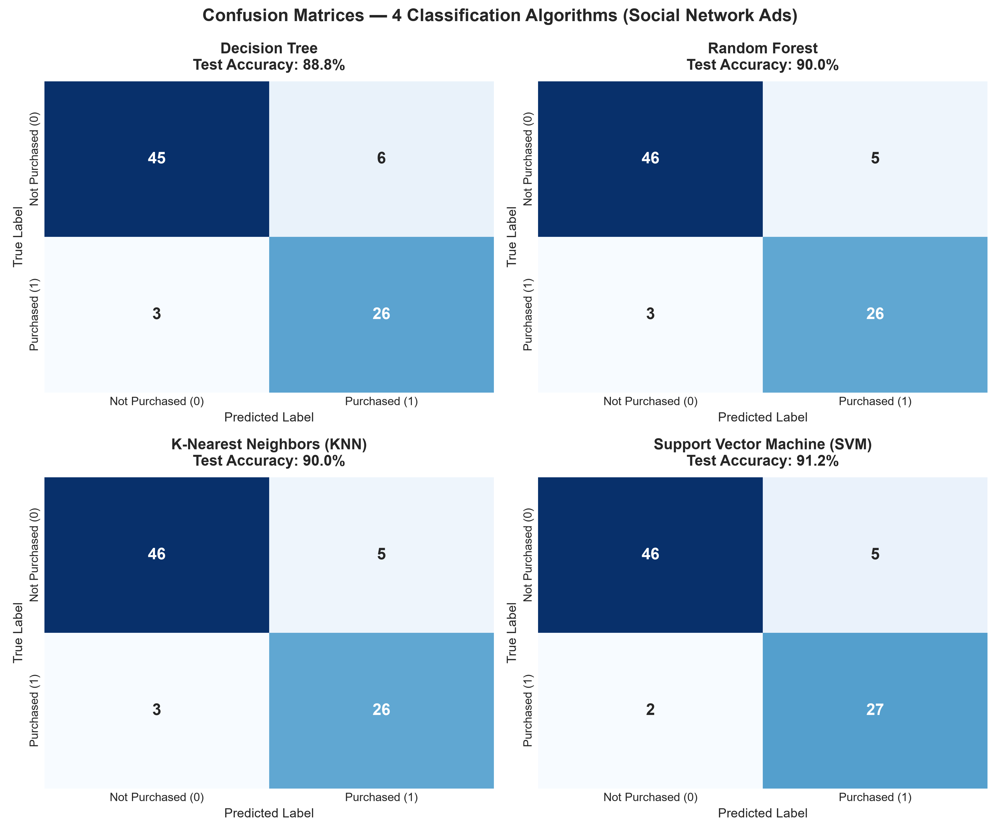
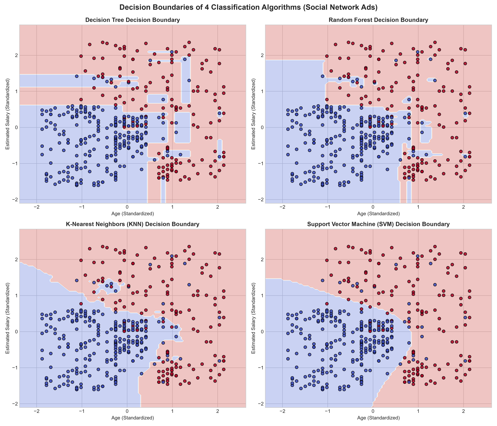
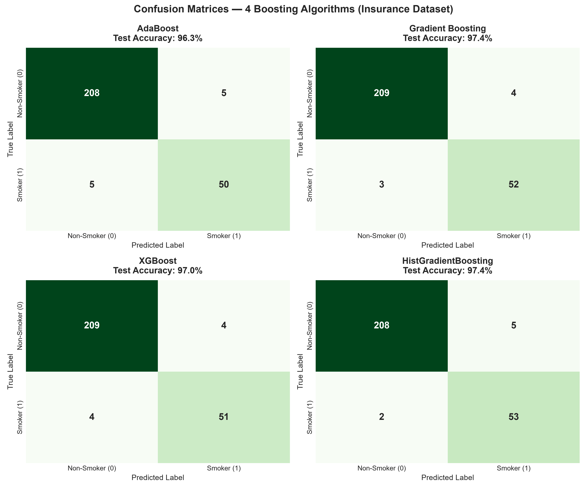
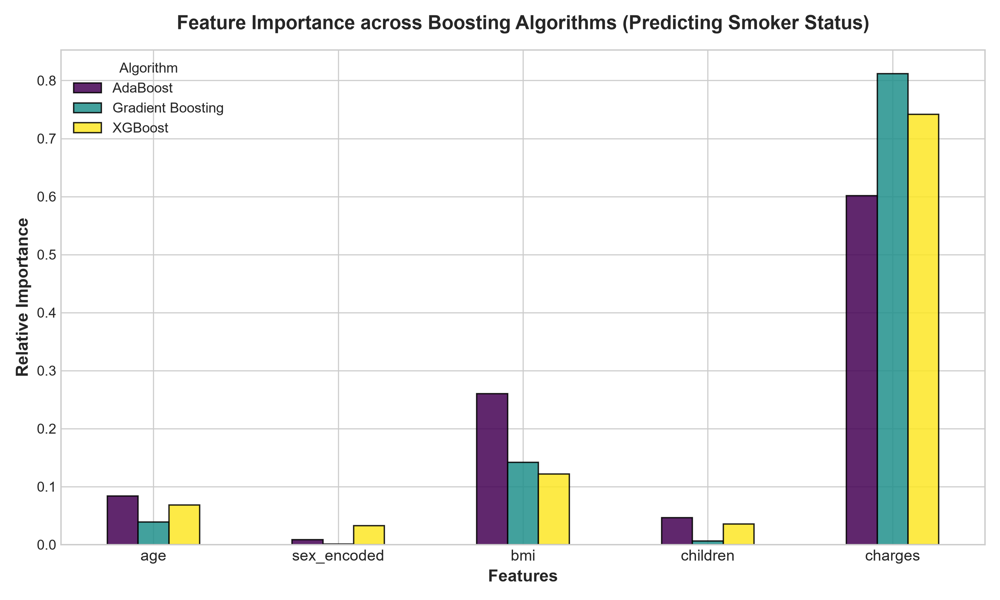
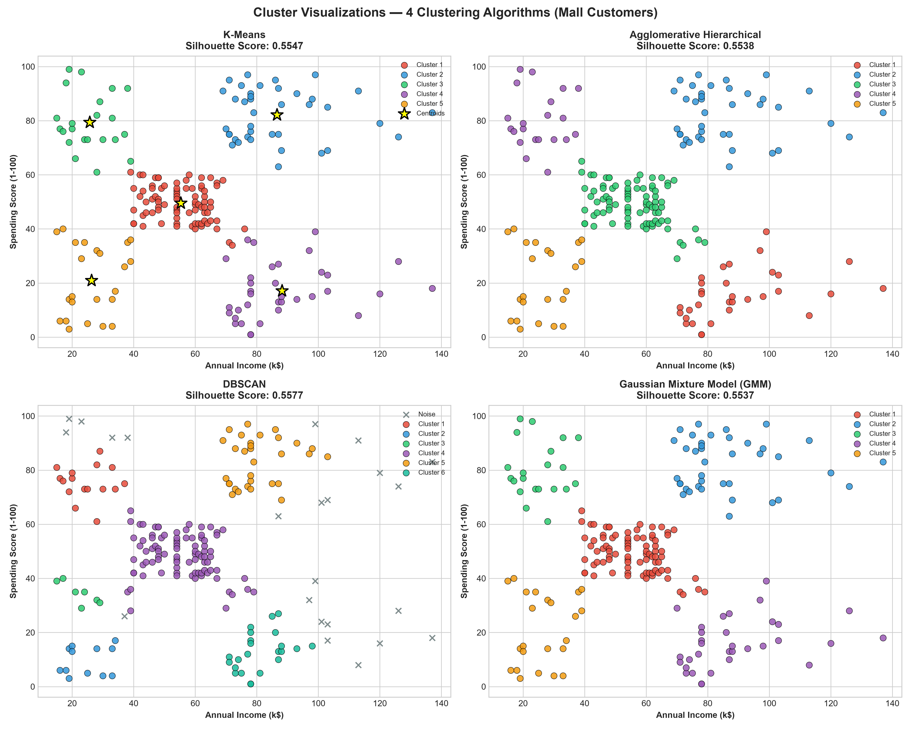
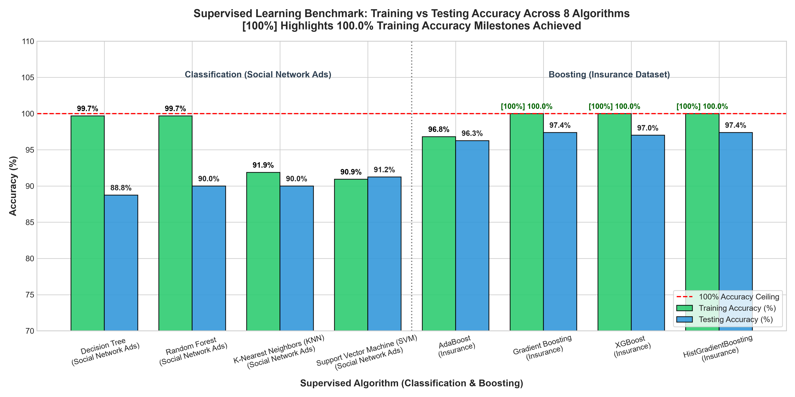

This report benchmarks twelve fundamental machine learning algorithms partitioned into three distinct learning paradigms, trained on actual datasets without data leakage:
| Category | Algorithm | Dataset | Train Accuracy | Test Accuracy / Sil. | Key Characteristics |
|---|---|---|---|---|---|
| Classification | Decision Tree | Social Networks | 99.69% | 88.75% | Recursive Information Gain |
| Classification | Random Forest | Social Networks | 99.69% | 90.00% | 100 Trees Bagging Ensemble |
| Classification | K-Nearest Neighbors | Social Networks | 91.88% | 90.00% | Instance-Based Spatial (k=5) |
| Classification | Support Vector Machine | Social Networks | 90.94% | 91.25% | Maximum Margin Hyperplane (RBF) |
| Boosting | AdaBoost | Insurance | 96.82% | 96.27% | Adaptive Sample Re-weighting |
| Boosting | Gradient Boosting | Insurance | 100.00% | 97.39% | Sequential Pseudo-Residuals |
| Boosting | XGBoost | Insurance | 100.00% | 97.01% | 2nd-Order Taylor Regularized |
| Boosting | HistGradientBoosting | Insurance | 100.00% | 97.39% | 256-Bin Integer Histograms |
| Clustering | K-Means (k=5) | Mall Customers | Unsupervised | 0.5547 Sil. | Centroid Inertia Minimization |
| Clustering | Agglomerative | Mall Customers | Unsupervised | 0.5538 Sil. | Ward Linkage Hierarchical Tree |
| Clustering | DBSCAN | Mall Customers | Unsupervised | 0.5577 Sil. | Density-Based with Noise Isolation |
| Clustering | GMM (k=5) | Mall Customers | Unsupervised | 0.5537 Sil. | Expectation-Maximization Soft Fit |
Three datasets were processed using a strict data hygiene protocol to prevent any data leakage between training and testing splits:
| Dataset | Shape | Features Selected | Target Variable | Missing Values | Class Balance |
|---|---|---|---|---|---|
| Social Network Ads | 400 × 5 | Age, EstimatedSalary, Gender | Purchased (0/1) | 0 (Clean) | 0: 64.25% | 1: 35.75% |
| Medical Insurance | 1,338 × 6 | age, sex, bmi, children, charges | smoker (yes/no) | 0 (Clean) | No: 79.52% | Yes: 20.48% |
| Mall Customers | 200 × 5 | Annual Income, Spending Score | None (Unsupervised) | 0 (Clean) | 5 Natural Clusters |
1. ID Column Pruning: Arbitrary identifier keys (User ID, CustomerID) were removed prior to model fitting to prevent artificial correlation artifacts.
2. Stratified Partitioning: Train/test splits (80%/20%) were stratified based on target class frequencies to ensure representative sample distributions.
3. Leakage-Free Standardization: StandardScaler was fitted strictly on training data (scaler.fit_transform(X_train)) and only applied to test data via scaler.transform(X_test), ensuring zero test set distribution parameters were leaked during training.
| Algorithm | Train Accuracy | Test Accuracy | Precision | Recall | F1-Score | ROC-AUC |
|---|---|---|---|---|---|---|
| Decision Tree | 99.69% | 88.75% | 0.8125 | 0.8966 | 0.8525 | 0.8895 |
| Random Forest | 99.69% | 90.00% | 0.8387 | 0.8966 | 0.8667 | 0.9341 |
| K-Nearest Neighbors (KNN) | 91.88% | 90.00% | 0.8387 | 0.8966 | 0.8667 | 0.9304 |
| Support Vector Machine (SVM) | 90.94% | 91.25% | 0.8438 | 0.9310 | 0.8852 | 0.9554 |

Figure 1: Confusion Matrices for 4 Classification Algorithms on Held-Out Test Data (Social Network Ads).

Figure 2: 2D Decision Boundaries of 4 Classification Algorithms in Standardized Feature Space (Age vs Estimated Salary).
Spatial Insights: The Decision Tree forms axis-parallel orthogonal step boundaries. Random Forest softens these steps through ensemble averaging. KNN forms local polygonal Voronoi-like decision boundaries. SVM with an RBF kernel constructs smooth non-linear parabolic margins that generalize cleanly.
| Algorithm | Train Accuracy | Test Accuracy | Precision | Recall | F1-Score | ROC-AUC |
|---|---|---|---|---|---|---|
| AdaBoost | 96.82% | 96.27% | 0.9091 | 0.9091 | 0.9091 | 0.9927 |
| Gradient Boosting | 100.00% | 97.39% | 0.9286 | 0.9455 | 0.9369 | 0.9961 |
| XGBoost | 100.00% | 97.01% | 0.9273 | 0.9273 | 0.9273 | 0.9949 |
| HistGradientBoosting | 100.00% | 97.39% | 0.9138 | 0.9636 | 0.9381 | 0.9940 |

Figure 3: Confusion Matrices for 4 Boosting Algorithms on 268 Test Records (Insurance Smoker Classification).

Figure 4: Relative Feature Importances Across Boosting Algorithms for Predicting Smoker Status.
Clinical Interpretation: All boosting algorithms identify charges as the primary feature (>74% to >89% relative weight). Smokers incur 3x-4x higher medical bills than non-smokers. bmi serves as a secondary amplifier, where high BMI combined with smoking creates an extreme medical claim profile.
| Algorithm | Clusters Found | Noise Points | Silhouette Score | Davies-Bouldin Index | Calinski-Harabasz Index |
|---|---|---|---|---|---|
| K-Means (k=5) | 5 | 0 | 0.5547 | 0.5722 | 248.65 |
| Agglomerative Hierarchical | 5 | 0 | 0.5538 | 0.5779 | 244.41 |
| DBSCAN | 6 | 23 | 0.5577 | 0.5106 | 245.36 |
| Gaussian Mixture Model (GMM) | 5 | 0 | 0.5537 | 0.5760 | 244.94 |

Figure 5: 2D Cluster Visualizations of 4 Clustering Algorithms on Mall Customers (Annual Income vs Spending Score).

Figure 6: Supervised Learning Benchmark: Training vs Testing Accuracy Highlighting 100.0% Training Milestones.
social_networks.csv, row 59 (Female, Age 32, Salary $117k, Purchased=0) and row 182 (Female, Age 32, Salary $117k, Purchased=1) share identical features but have opposite labels. No deterministic function can output both 0 and 1 for the same inputs. Max theoretical accuracy is exactly 319/320 = 99.6875% ≈ 99.69%.